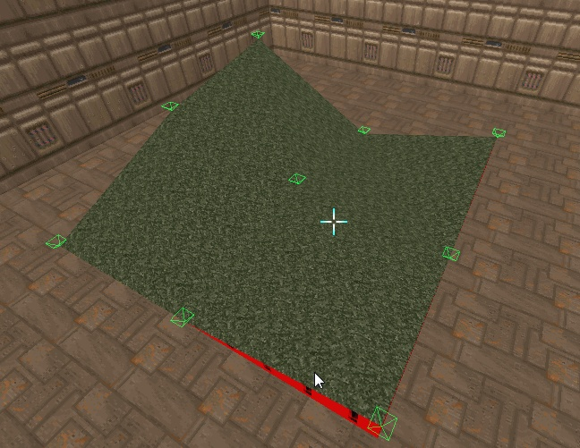

可视顶点允许你在视觉模式中编辑顶点的垂直偏移。
你可以像物件一样选择和编辑它们（只是不能水平移动它们）。
你可以使用“删除”动作（通常绑定到 Delete 键）清除所选顶点的 z 偏移。
你可以从渲染工具栏或通过“切换可视顶点”动作来切换可视顶点的显示。
带有高度偏移的可视顶点（例如在“zceiling”或“zfloor”UDMF 字段中设置了某些值）会使用“信息线”颜色着色。没有偏移的可视顶点会使用“顶点”颜色着色。你可以在 首选项 -> 外观 中更改这些颜色。
技术说明 №1：可视顶点仅在地图使用 UDMF 地图格式时有效。
技术说明 №2：可视顶点仅对三角形扇区有效。
创建这片奇妙的地形大约花了 30 秒：

你可以使用地形导入器创建更加精细的地形。